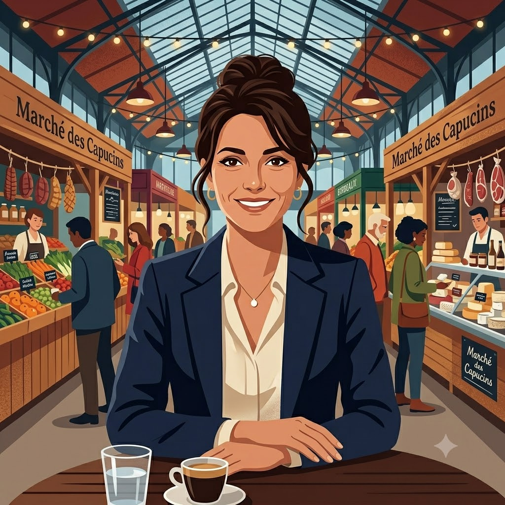
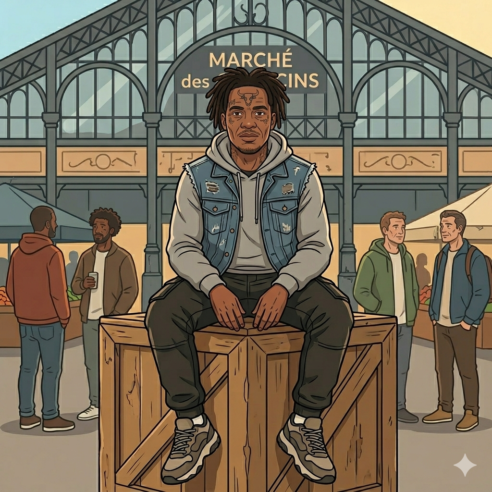
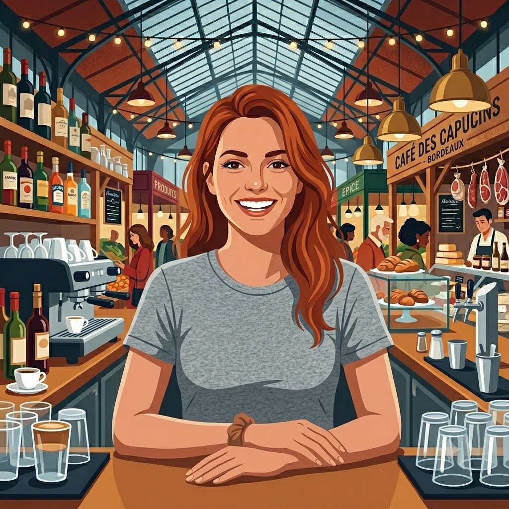
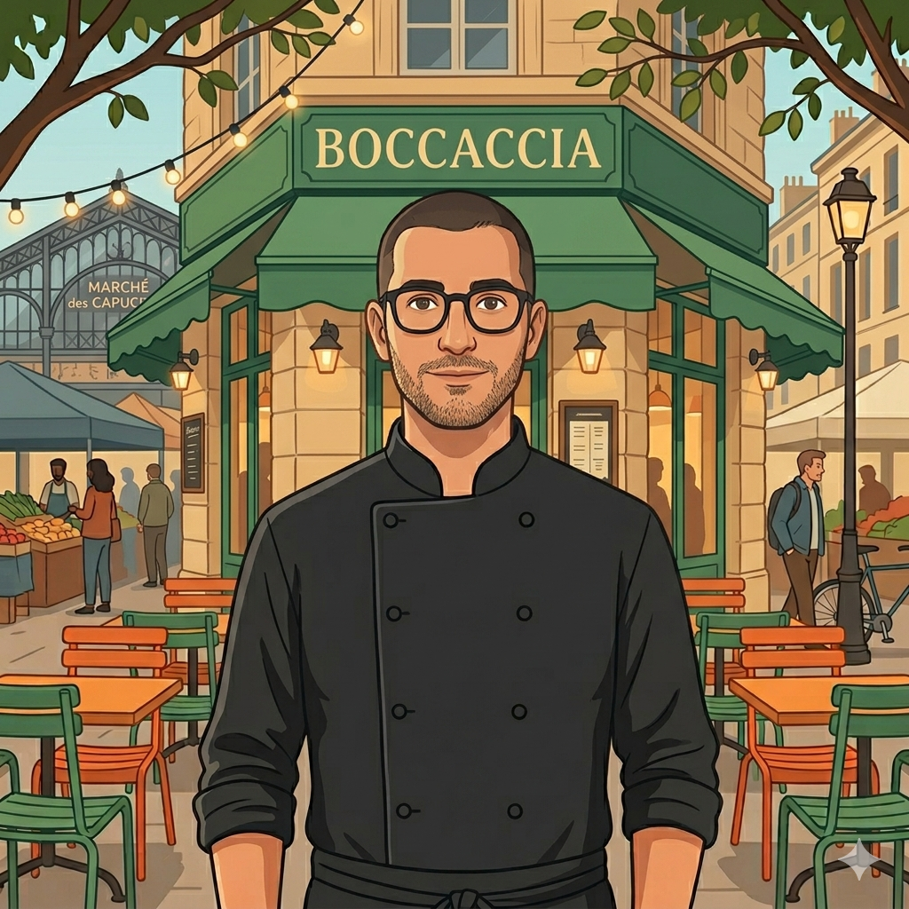
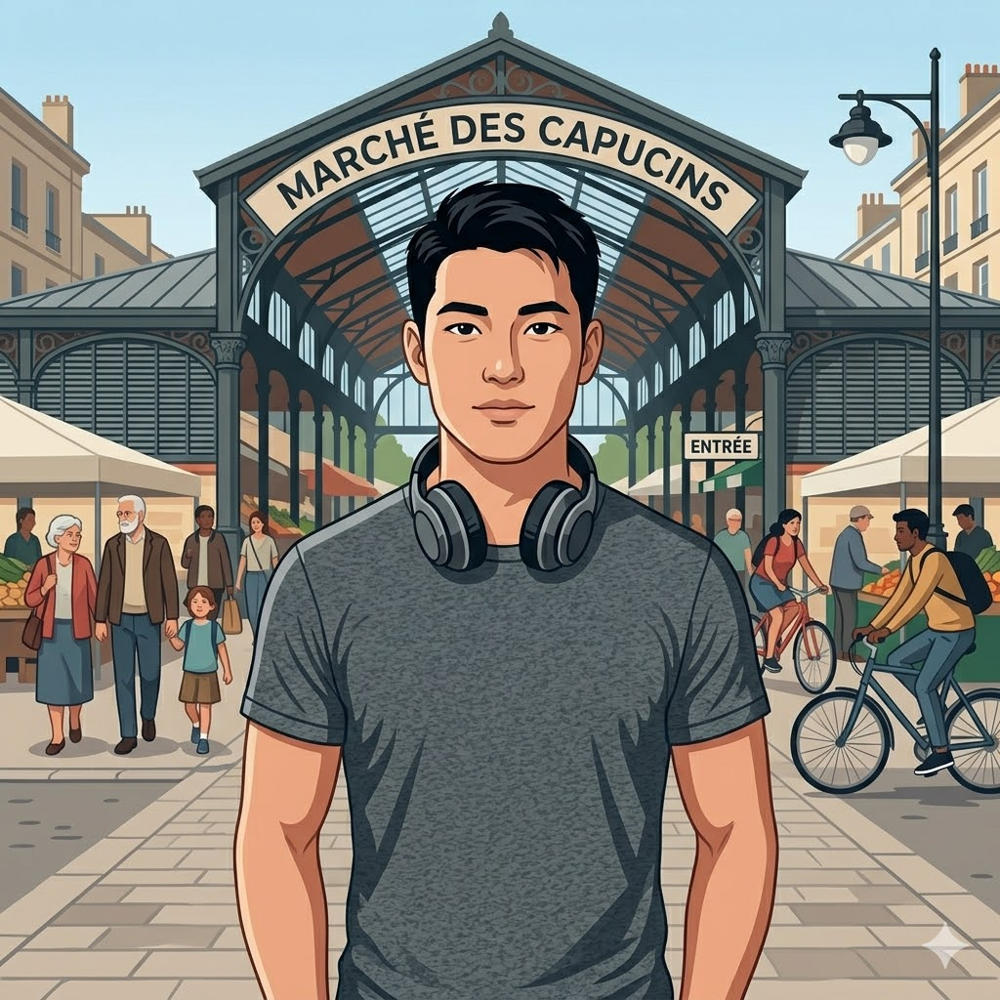
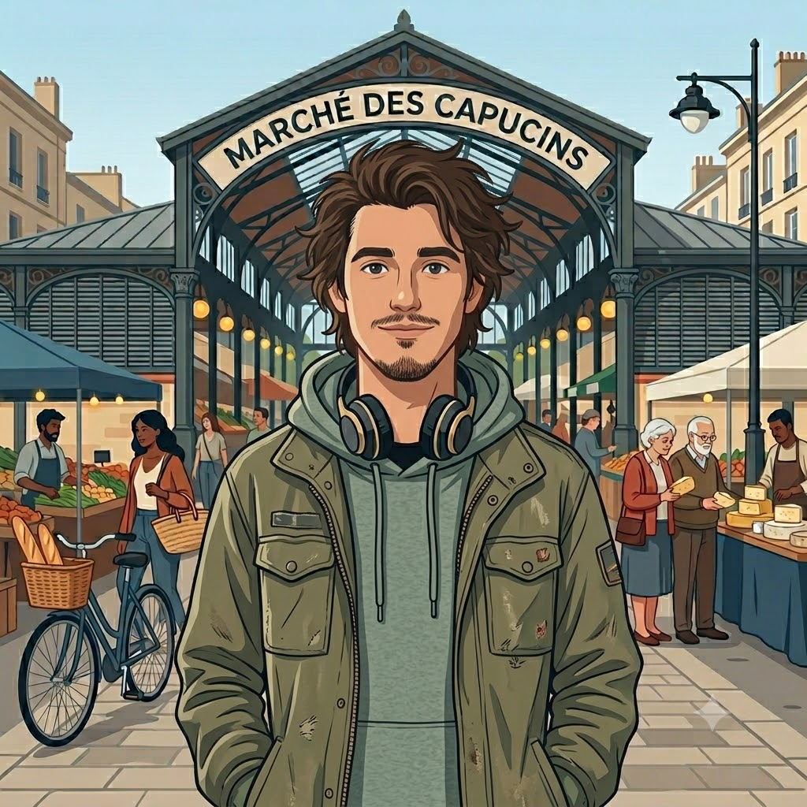

27 avril 2026, 14h. Rue Élie-Gintrac, quartier des Capucins. Plus de 130 policiers quadrillent le quartier, à pied, à cheval, à VTT, à moto. Le préfet Étienne Guyot est là. Le procureur Renaud Gaudeul aussi. Thomas Cazenave, tout juste élu maire, en première ligne.

Le message est clair : la nouvelle équipe frappe fort, frappe vite. Un "véritable signal envoyé", selon ses propres mots.
Mais un signal à qui ? Et surtout, est-ce vraiment nouveau ? On est allés voir.
M. Lecornu et M. Nuñez annoncent un commissariat mixte (police nationale/municipal) aux Capucins. Thomas Cazenave s'empare de la séquence.
Treize jours après son investiture. Caméras nomades, présence renforcée, lutte contre les vélos débridés... Des annonces.
130 policiers déployés. L'opération avait fuité en amont via Révolution Permanente Bordeaux. Les dealers étaient prévenus avant les journalistes.
Les trafics n'ont pas disparu. Les habitants n'ont pas changé de discours.
Le quartier des Capucins, c'est d'abord un marché populaire, des petits restaurateurs, une mixité sociale rare dans un centre-ville de plus en plus gentrifié. Antonio et Lucho, qui fréquentent les lieux depuis des années, parlent carrément de melting pot. Karine, elle, décrit un quartier "cosmopolite, hors-normes pour Bordeaux, avec son humanité." Mila, barwoman au café depuis trois ans, dit simplement : un beau mélange de cultures et de classes sociales. Un quartier vivant, bruyant, imparfait.
Mais depuis des années, la rue Élie-Gintrac concentre les tensions. En 2024, 400 contrôles dans cette seule rue, 266 interpellations, 5 kg de cocaïne saisis, selon le blog "Bouger à Bordeaux". Cela démontre la concentration du taux de criminalité dans cette seule rue du quartier.

Face à ça, des habitants se sont organisés dès 2020 au sein du collectif "Élie Ta Rue", dénonçant un commissariat fermé le week-end, une présence policière aux abonnés absents pendant les heures creuses.
Sur le terrain, le sentiment qui revient : une insécurité qui peut exister à certains moments, mais qui est grossie par les discours et mesures politiques.
Ben, cinq ans dans le quartier, ne s'est "jamais senti agressé ou menacé." Mila non plus, même si elle comprend que la nuit, c'est une autre ambiance. Unai va plus loin : pour lui, la mauvaise réputation du quartier tient davantage à la stigmatisation de ses habitants qu'aux faits réels. La délinquance existe, Antonio ne le nie pas, lui qui voit passer tout depuis sa terrasse depuis dix ans, mais elle découle, disent-ils tous, de la précarité. Pas d'une nature particulière du quartier.
Le 27 avril, 130 policiers débarquent. Karine les a vus depuis le marché, des agents qui se baladaient à l'intérieur, là où d'habitude il n'y en a pas. Inhabituel. Mais pour elle, difficile de voir autre chose qu'un coup de com', mis en scène, sans réel impact factuel.
Lucho dit la même chose : utile, peut-être, si c'était non-stop. Une fois, ça ne sert à rien. Unai, lui, nous parle de ce qu'il a vu : surtout des contrôles au faciès, ciblant en priorité les personnes racisées d'un quartier qui l'est majoritairement. Un biais qui, selon lui, annule d'emblée tout impact réel.
Sur le terrain, un mois après, personne ne constate de changement. Antonio résume : "Avec les caméras, c'était bien mis en scène, maintenant nous attendons de voir à l'avenir."






Cazenave a voulu frapper vite et fort. Une réactivité qui forcerait le respect si elle s'accompagnait d'une réflexion de fond. Ce dont on n'a pas encore vu la couleur.
Avant Cazenave, il y avait Hurmic. Le GLTD (groupes locaux de traitement de la délinquance) existait déjà. Les partenariats entre police nationale et municipale, la rhétorique de fermeté, tout ça préexistait.
Hurmic faisait pareil, en silence.
La preuve vient du préfet lui-même. Étienne Guyot, le 27 avril en marge de l'opération :

Chiffre confirmé par le préfet Guyot lui-même. La situation n'a pas fondamentalement changé. Qu'est-ce qui nous dit que la 285ème changera quelque chose ?
Karine, elle, a une formule qui résume bien l'ambiance : on essaie d'"aseptiser" le quartier. Les bancs enlevés, contestés par tout le monde. Plus de police. Une impression de nettoyage cosmétique plutôt que de transformation réelle. Antonio, qui nettoie lui-même la place le dimanche matin avec son équipe parce que personne d'autre ne le fait, confirme : depuis Cazenave, c'est "peut-être un peu pire."
Ce qui frappe, c'est la convergence. Habitants et opposition municipale disent la même chose : la répression seule ne règle rien.
"Thomas Cazenave n'a utilisé qu'une fois le mot rénovation. Si on veut résoudre les problèmes, c'est par la rénovation, pas par des opérations policières."Stéphane Pfeiffer (Les écologistes), conseiller municipal d'opposition
Les habitants disent majoritairement la même chose. Mila préfère les services sociaux et les associations à la présence policière. Ben aussi, pour accompagner ceux qui en ont besoin, plutôt que de punir, offrir des opportunités de réinsertion, et leur proposer des solutions. Unai est direct : la répression ne traite pas le problème, elle stigmatise des gens qui n'ont souvent pas d'autre choix.
Antonio, lui, a une vision concrète. Ce qu'il veut : que la place vive, des vrais bancs aménagés correctement, des événements le soir, un groupe de jazz, des vernissages. "Organiser des choses le vendredi, le mercredi soir. Pas le dimanche matin où tout le monde est déjà là, en profitant du flux du marché." Il a même pris rendez-vous avec la mairie pour le dire en face. Pas pour se plaindre, pour voir si les promesses tiennent.
Pourtant Cazenave continue. Commissariat mixte, contrat de sécurité intégré, armement des policiers municipaux en discussion. Les annonces s'accumulent, les résultats restent à prouver, et pas uniquement avec des chiffres d'arrestations, mais avec du concret.
Ce qui interroge, c'est l'obstination. Quand les habitants demandent de l'accompagnement, quand l'opposition demande de la rénovation, quand le terrain dit autre chose que ce que racontent les conférences de presse, continuer dans la même direction, c'est un choix. Politique, assumé, et qui ne s'adresse pas à tout le monde.
C'est le symptôme d'une politique à la macroniste : on sait ce qui est bon pour vous, mieux que vous. On frappe fort, on communique, et on passe à autre chose. On connaît cette méthode.
La répression sans accompagnement, c'est un nettoyage au Karcher et un abandon des principaux concernés.
Pour qui
gouverne-t-il ?
La question n'est pas de savoir si Thomas Cazenave veut le bien du quartier. La question est de savoir à qui s'adresse réellement ce type d'opération.
Car ceux qui réclament plus de sécurité et de fermeté ne sont pas nécessairement ceux qui vivent rue Élie-Gintrac ou au quartier des Capucins. Et ceux qui subissent les contrôles, les fouilles, la présence policière au quotidien : ce sont les habitants des Capucins. Pas les autres.
Karine le dit sans détour : "Ils veulent faire des Capucins les Chartrons. Mais les Capucins ne sont pas les Chartrons, ils ne les connaissent pas." Ben confirque : il n'a jamais vu un élu venir poser des questions sur le terrain. Jamais. Ce que font des associations externes comme "Le Boulevard Des Potes".
C'est peut-être là que réside le vrai problème. Pas dans les intentions, mais dans l'angle mort de toute politique sécuritaire qui parle d'un quartier sans vraiment lui parler.
Et si la meilleure façon de comprendre ce qui se passe aux Capucins, c'était simplement d'y aller ? Pas pour poser des questions avec un micro, pas pour cocher des cases. Juste pour être là. Sentir l'ambiance d'un mardi matin au marché, croiser les mêmes visages. Ce quartier se raconte mieux dans ses ruelles qu'à la tribune d'une conférence de presse.
D'après notre expérience lors de cette enquête, les discussions hors interview nous ont appris beaucoup de choses : notamment que les gens de ce quartier n'ont plus envie de venir parler au micro. Qu'ils sont sceptiques, pensant que cela ne servirait à rien, puisque rien ne change. Que la réalité médiatique est bien différente de la réalité quotidienne.
C'est ça, la mission d'Under Bordeaux. Aller là où les discours officiels ne vont pas. Se faire sa propre idée. Et vous donner les moyens de vous faire la vôtre. Affaire à suivre...


Et à suivre de près.